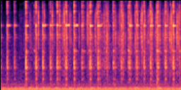
The original recording contains an engine passing by and an alarm, in the open air.
Edit: The engine is removed. The alarm must stay exactly as in the original.
Original
Ours
Ground truth
Each example gives the original recording, the edit in words, our result, and the ground truth (the edited scene rendered in closed form by the same physical renderer that made the original). All clips are 4 s at 16 kHz. Spectrograms are mel scale.
How the examples were chosen: a scene must first pass fixed audibility rules (every named source is within 15 dB of the loudest and active for at least 40% of the clip; room edits must change the level in the gaps by more than 3 dB). Second, the edit must matter and our result must be a real edit: our output must be at least 4 dB closer to the ground truth (SI-SDR) than the unedited mixture, and at least 5 dB from the mixture itself. Among the scenes that pass, up to three shown per edit are the ones with the largest gain over the unedited mixture. They are therefore favorable examples, not typical ones. The medians in the paper and the listening-test trials come from the full cohort and from the audibility rules written before any listener data (full list in the protocol file). An edit with no passing scene says so.
The original recording contains an engine and a hammer, in the open air.
Edit: The hammer is removed. The engine must stay exactly as in the original.

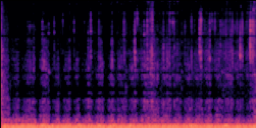
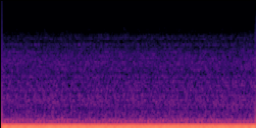
The original recording contains an engine passing by and an alarm, in the open air.
Edit: The engine is removed. The alarm must stay exactly as in the original.
The original recording contains an engine and a door, in a room (absorption 0.30).
Edit: The engine is removed. The door must stay exactly as in the original.


The original recording contains an engine passing by, in the open air.
Edit: The engine passes by at 5 m/s instead of 32 m/s, that is slower. The pitch drop as it passes should be smaller and more gradual, and the rise and fall of loudness should be longer.


The original recording contains an engine passing by, in the open air.
Edit: The engine passes by at 10 m/s instead of 39 m/s, that is slower. The pitch drop as it passes should be smaller and more gradual, and the rise and fall of loudness should be longer.
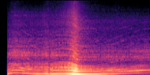
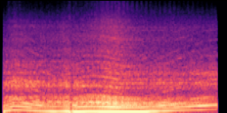
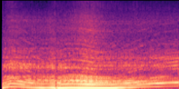
The original recording contains an engine passing by, in the open air.
Edit: The engine passes by at 20 m/s instead of 6 m/s, that is faster. The pitch drop as it passes should be larger and quicker, and the rise and fall of loudness should be shorter.


The original recording contains an engine passing by and an alarm, in the open air.
Edit: The alarm is moved 2 times farther away: it should sound quieter and more distant. The engine must stay exactly as in the original.

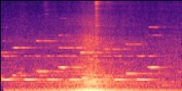
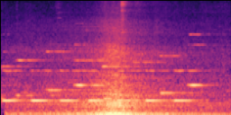
The original recording contains an engine and a door, in a room (absorption 0.30).
Edit: The door is moved 4 times farther away: it should sound quieter and more distant. The engine must stay exactly as in the original.


The original recording contains a hammer, in a room (absorption 0.45).
Edit: The room becomes less absorbing (absorption 0.45 to 0.30): the reverberation tail after each sound becomes longer. The sounds themselves stay the same.


The original recording contains a tapping sound, in a room (absorption 0.50).
Edit: The room becomes less absorbing (absorption 0.50 to 0.30): the reverberation tail after each sound becomes longer. The sounds themselves stay the same.


The original recording contains a hammer and an engine, in a room (absorption 0.50).
Edit: The room becomes less absorbing (absorption 0.50 to 0.40): the reverberation tail after each sound becomes longer. The sounds themselves stay the same.
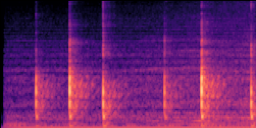
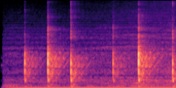
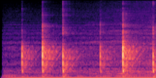
The original recording contains an engine passing by and an alarm, in the open air.
Edit: The engine is removed, and the alarm is moved 2 times farther away.
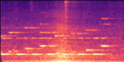
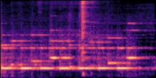
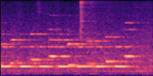
The original recording contains an engine and a door, in a room (absorption 0.30).
Edit: The engine is removed, and the door is moved 4 times farther away.


The original recording contains an engine passing by and a thump, in the open air.
Edit: The engine passes by at 30 m/s instead of 8 m/s, that is faster, and the thump is moved 2 times farther away.
No scene passes the full rules for this chain, so this example is shown under relaxed rules: the CLAP class check and the onset-overlap check are skipped, brief transient sources are allowed, the exposed room tail may be 0.6 s, and our output needs only 3 dB of gain over the unedited mixture; the scene shown is the one where our output is closest to the ground truth. For this scene our output is 14.2 dB from the ground truth (SI-SDR) and the unedited mixture 10.1 dB.


The original recording contains a gunshot and a bass drum, in a room (absorption 0.35).
Edit: The gunshot is removed, and the room becomes more absorbing (absorption 0.35 to 0.40).
No scene passes the full rules for this chain. The examples shown were picked by the authors by listening to the candidate scenes in which every named source is within 15 dB of the loudest. For this scene our output is 36.7 dB from the ground truth (SI-SDR) and the unedited mixture 4.9 dB.


The original recording contains a drum, in a room (absorption 0.50).
Edit: The drum is removed, and the room becomes less absorbing (absorption 0.50 to 0.35).
No scene passes the full rules for this chain. The examples shown were picked by the authors by listening to the candidate scenes in which every named source is within 15 dB of the loudest. For this scene our output is 20.6 dB from the ground truth (SI-SDR) and the unedited mixture -25.2 dB.


The original recording contains a bell and a breaking glass, in a room (absorption 0.50).
Edit: The breaking glass is removed, and the room becomes less absorbing (absorption 0.50 to 0.45).
No scene passes the full rules for this chain. The examples shown were picked by the authors by listening to the candidate scenes in which every named source is within 15 dB of the loudest. For this scene our output is 43.7 dB from the ground truth (SI-SDR) and the unedited mixture -1.2 dB.


The original recording contains a bell and an alarm passing by, in the open air.
Edit: The bell is removed, and the alarm passes by at 30 m/s instead of 23 m/s, that is faster.
No scene passes the full rules for this chain. The examples shown were picked by the authors by listening to the candidate scenes in which every named source is within 15 dB of the loudest. For this scene our output is -8.5 dB from the ground truth (SI-SDR) and the unedited mixture -22.5 dB.


No ground truth exists for a changed speed of a real recording; the paper scores these with an independent speed verifier.
Mazda3: the recording was made at 43 km/h. The vehicle passes by at 30 km/h instead.


RenaultCaptur: the recording was made at 30 km/h. The vehicle passes by at 39 km/h instead.


RenaultCaptur: the recording was made at 72 km/h. The vehicle passes by at 50 km/h instead.


Mazda3: the recording was made at 67 km/h. The vehicle passes by at 87 km/h instead.


RenaultCaptur: the recording was made at 50 km/h. The vehicle passes by at 35 km/h instead.


Mazda3: the recording was made at 94 km/h. The vehicle passes by at 122 km/h instead.


A secondary page compares all seven systems on the same examples.